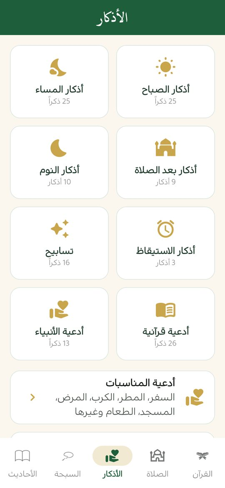
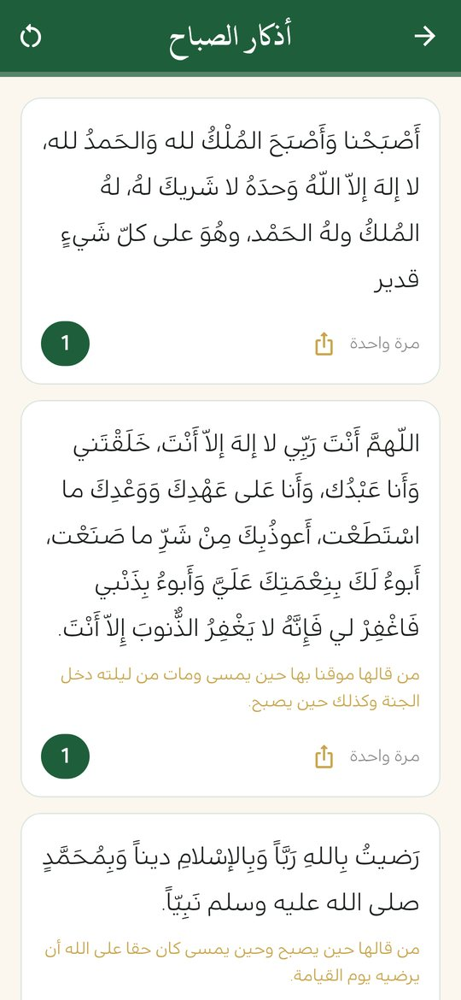
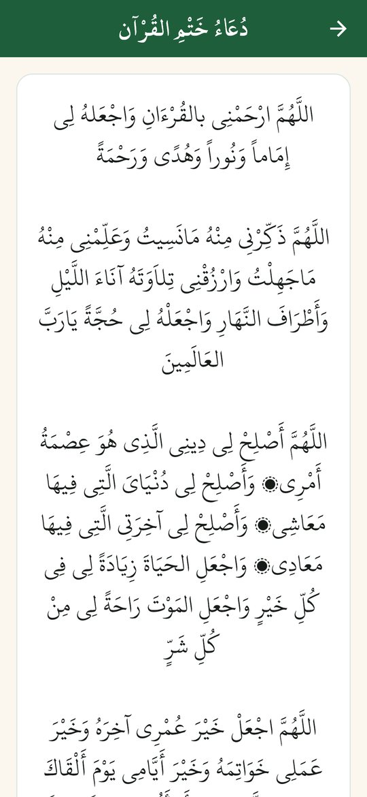
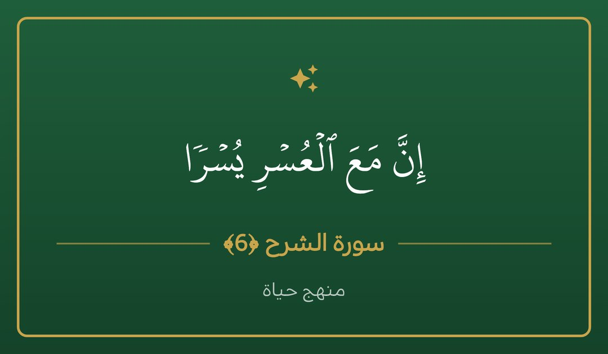

أذكار الصباح والمساء والنوم وبعد الصلاة
الأذكار اليومية من كتاب حصن المسلم في تطبيق واحد يعمل دون إنترنت، مع عدّاد لكل ذكر يُحفظ طوال اليوم وتنبيهات تذكّرك بها في وقتها.
ملف APK لأندرويد 7.0 فأحدث · مجاني · دون إعلانات

الأذكار اليومية
تجد الأذكار مقسّمة بحسب المناسبة:
- أذكار الصباح وأذكار المساء.
- أذكار بعد الصلاة.
- أذكار النوم وأذكار الاستيقاظ.
- التسابيح، والأدعية القرآنية، وأدعية الأنبياء.
لكل ذكر عدّاد يُحفظ طوال اليوم، فتعرف أين وصلت. ويمكنك تفعيل تنبيهات تذكّرك بأذكار الصباح والمساء في وقتها.

أدعية المناسبات
أبواب حصن المسلم كاملة: أدعية السفر والمطر والكرب والمرض والمسجد والطعام وغيرها، مع بحث للوصول إلى المناسبة التي تريدها.

كيف تنظّم أذكارك مع التطبيق
- فعّل تنبيهات أذكار الصباح والمساء من الإعدادات لتصلك في وقتها.
- افتح قسم الأذكار عند وصول التنبيه واقرأ، ويعدّ التطبيق لك كل ذكر ويحفظ عدّاده طوال اليوم.
- جرّب أذكار بعد الصلاة مع وضع «بعد الصلاة» في السبحة إن أردت ترتيب التسبيح.
- كبّر خط الأذكار من الإعدادات إن احتجت، وشارك ما يفيدك كبطاقة صورة.
الرقية الشرعية وأسماء الله الحسنى
يضم التطبيق أيضاً الرقية الشرعية من القرآن والسنة، وأسماء الله الحسنى التسعة والتسعين، ودعاء ختم القرآن.
قراءة مريحة ومشاركة
يمكنك تكبير خط الأذكار والأدعية أو تصغيره من الإعدادات، ومشاركة أي ذكر أو دعاء كبطاقة صورة بالأخضر والذهبي (أو بخلفية فاتحة) مع ذكر المصدر.

من أين نصوص الأذكار؟
الأذكار من كتاب حصن المسلم عبر islambook.com، مع حذف حروف المدّ الزائدة وتصحيح المسافات فقط دون تغيير النص. وأبواب حصن المسلم الكاملة من حزمة بيانات مفتوحة المصدر مذكورة في صفحة المشروع.
أسئلة شائعة
هل تعمل الأذكار بدون إنترنت؟
نعم، كل نصوص الأذكار والأدعية داخل التطبيق وتعمل دون اتصال.
هل يذكّرني التطبيق بأذكار الصباح والمساء؟
نعم، يمكنك تفعيل تنبيهات تذكّرك بأذكار الصباح والمساء.
هل أستطيع تكبير خط الأذكار؟
نعم، حجم الخط قابل للتعديل من الإعدادات للأذكار والأدعية والأحاديث.
هل يمكن مشاركة ذكر أو دعاء؟
نعم، كبطاقة صورة أنيقة مع ذكر المصدر.
اقرأ أيضاً
حمّل منهج حياة مجاناً
القرآن والصلاة والذكر في تطبيق واحد، دون إعلانات ودون حساب.